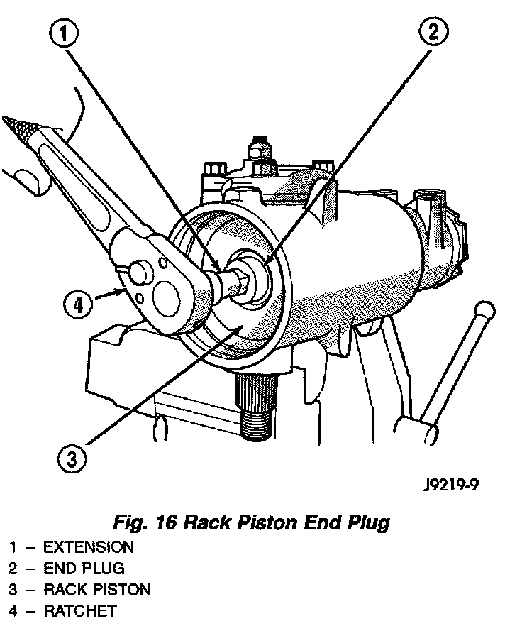
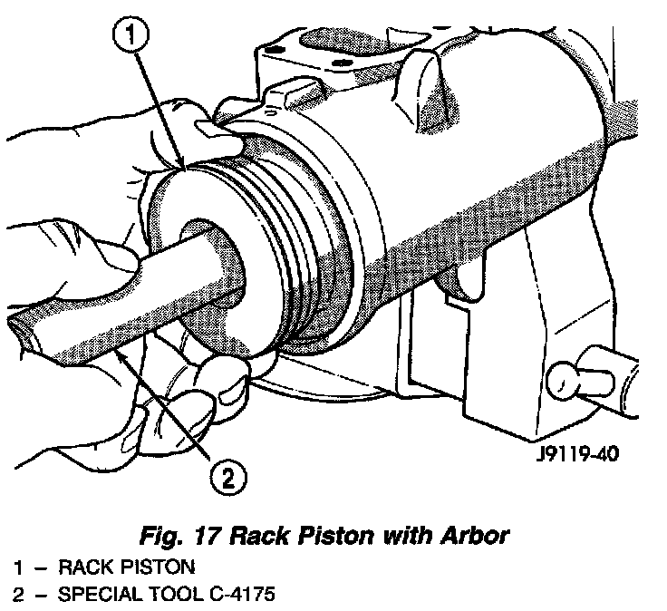
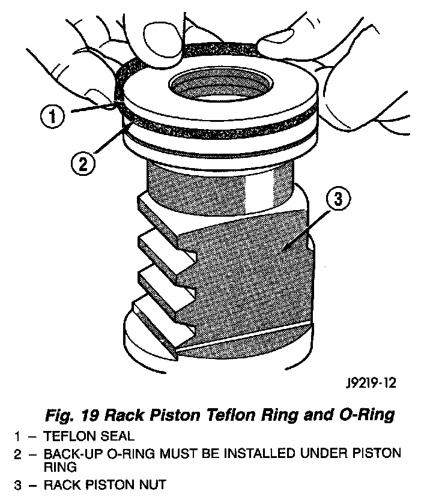

Removal
NOTE: Steering gear must be removed from the vehicle for this procedure.1. Remove pitman shaft and side cover.
2. Remove housing end plug.
3. Turn stub shaft COUNTERCLOCKWISE until the rack piston begins to come out of the housing.
Fig. 16:

4. Remove rack piston plug.
Fig. 17:

5. Insert Arbor C-4175, or equivalent into bore of rack piston. Hold tool tightly against worm shaft while turning the stub shaft COUNTERCLOCKWISE.
6. The rack piston will be forced onto the tool and hold the rack piston balls in place.
7. Remove the rack piston, rack balls, and tool together from housing.
8. Remove valve, worm shaft and thrust bearing and races.
9. Remove tool from rack piston.
10. Remove rack piston balls.
11. Remove screws, clamp and ball guide.
Fig. 19:

12. Remove teflon ring and O-ring seal.